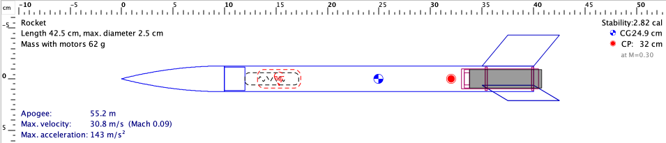
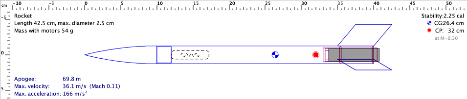
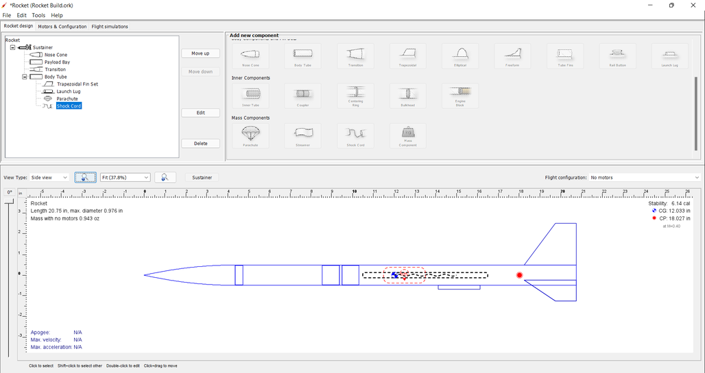

Recuperación y preparación del montaje
Comprender cómo vuelve el cohete y comprobar espacio, uniones y compatibilidad del sistema elegido.
El proyecto también incluye el descenso
El sistema de recuperación se diseña junto al resto del modelo. Necesita espacio para guardarse, una conexión que mantenga las piezas relacionadas y un movimiento compatible con el conjunto comercial. Si se deja para el final, puede aparecer un cuerpo cerrado que no permite alojarlo o desplegarlo de la forma prevista.

Paracaídas y cinta de recuperación aumentan el efecto del aire durante el descenso de maneras diferentes. Elegir uno depende de masa, tamaño, espacio y condiciones del vehículo. La clase no establece una solución universal ni un tamaño por longitud exterior: se revisa el sistema del modelo y su documentación.
Qué debe resolver el conjunto
| Necesidad | Qué observar |
|---|---|
| Guardar | Envolvente y espacio disponible |
| Conectar | Cordones y uniones del sistema |
| Salir | Camino sin interferencias |
| Descender | Sistema apropiado al conjunto |
| Revisar | Acceso después del vuelo |
La recuperación permite completar la misión después del ascenso. Incluye un dispositivo, uniones, espacio de guardado, recorrido de salida y compatibilidad con el conjunto. El proyecto debe poder explicar dónde se encuentra cada parte antes, durante y después de su despliegue previsto. Una fotografía de un paracaídas abierto no muestra necesariamente si el mismo sistema cabe y se mueve en el cuerpo construido. Por eso el diseño se revisa como un conjunto.
Paracaídas y cinta: comparar funciones
Dos opciones habituales de modelismo
| Sistema | Qué aporta a la discusión | Qué comprobar |
|---|---|---|
| Paracaídas | Superficie desplegada y descenso | Volumen plegado, cordones y sistema elegido |
| Cinta o streamer | Despliegue de una banda y seguimiento visual | Compatibilidad con masa y vehículo |
| Sistema del fabricante | Conjunto de piezas e instrucciones relacionadas | Referencias y montaje previstos |
La comparación empieza con el conjunto comercial que el docente propone. Las piezas se presentan sin activar ningún mecanismo. Se observa qué ocupa cada elemento, qué partes deben permanecer conectadas y qué superficies pueden bloquear el movimiento. No se cambia un sistema simplemente porque otro parezca ocupar menos lugar.
Una cinta ocupa menos, pero falta una decisión
Un equipo quiere sustituir el paracaídas previsto por una cinta porque es más fácil de guardar.
Razonamiento del caso
La reducción de volumen es una observación útil, pero no resuelve el descenso del conjunto. El docente debe revisar masa, comportamiento previsto y compatibilidad. El cambio también se representa en el archivo.
La finalidad de esta clase es que el alumno vea la recuperación como una función del vehículo. Saber nombrar el dispositivo es el comienzo, no la comprobación completa.
El paracaídas y la cinta o streamer modifican la interacción del conjunto con el aire durante el descenso. Se diferencian en forma, volumen guardado y comportamiento previsto. Su elección depende de las condiciones y del vehículo, por lo que se sigue una solución comercial o docente identificada. Una opción que ocupa menos volumen no resuelve por sí sola el descenso. La tabla sirve para reconocer funciones y comprobar compatibilidad, no para intercambiar dispositivos solo por su apariencia.
Cordones, bordes y acceso

Las piezas conectadas pueden moverse unas respecto a otras sin quedar sueltas. Los cordones requieren un recorrido que se pueda guardar y revisar. Un borde, una arista impresa o una pieza interior pueden provocar rozamiento o enganchar un pliegue. La revisión visual debe hacerse con los objetos que realmente se montarán.
- Identifica dónde se fija cada parte del sistema según la solución elegida.
- Recorre con la vista el camino desde el interior hacia la abertura.
- Presenta los componentes y comprueba si una pieza ocupa el mismo espacio que otra.
- Observa los bordes y solicita al docente la corrección apropiada si afectan el recorrido.
- Conserva una fotografía del acceso antes de cerrar el montaje.
En el proyecto con motor comercial se usan los elementos de protección y recuperación que corresponden al diseño y a sus instrucciones. Una impresión de aula no reemplaza por su apariencia una pieza de protección definida por el fabricante.
La comprobación del recorrido se hace con el sistema real y su condición de guardado. Un cordón o pliegue cambia de posición al manipularlo. Por eso no basta verificar una abertura vacía. El docente prepara un método repetible de presentación y define qué puede concluirse. Si una corrección cambia el hombro, el borde o una pieza interior, el recorrido debe revisarse de nuevo antes de cerrar esa condición.
Representar el sistema en OpenRocket

- Abre el archivo completo y confirma qué dispositivo representa la recuperación.
- Introduce dimensiones y masa del componente seleccionado o su representación adecuada.
- Revisa el evento de despliegue que corresponde al sistema previsto.
- Comprueba en la configuración comercial qué retardo o evento se está utilizando y deja la revisión al docente.
- Ejecuta nuevamente la predicción y observa el evento de recuperación respecto al apogeo.
- Guarda la configuración y las gráficas; no cambies solo el nombre del archivo.
Un evento de programa no demuestra que el objeto se moverá sin interferencias. La revisión digital y la presentación física responden preguntas complementarias. [OR1, OR3]
En el programa se representa un dispositivo con dimensiones, masa y una condición de despliegue. Esos campos describen una hipótesis del modelo. En el objeto físico interesa comprobar piezas y recorrido según el procedimiento del responsable. Mantener ambos registros relacionados permite descubrir, por ejemplo, que el archivo usa un dispositivo diferente al preparado en taller. La revisión digital y la de banco aportan evidencias distintas a la decisión del docente.
Ensayo de banco con el sistema inerte
La comprobación de clase se realiza sin activar un motor ni un dispositivo energético. Permite estudiar espacio, acceso y movimiento con el método de presentación definido por el docente. No reproduce por completo las condiciones de vuelo, por lo que su conclusión debe conservar ese alcance.
- Describe la configuración inerte que se presenta y verifica que corresponda al plano.
- Coloca los componentes de recuperación como se ha previsto para la demostración de banco.
- Comprueba el recorrido y señala interferencias observables sin forzar el conjunto.
- Repite después de corregir una condición identificada.
- Registra qué se comprobó y qué sigue dependiendo de la revisión final del sistema.
La recuperación está dibujada, pero el paso se bloquea
En la presentación, un reborde del hombro impide el movimiento libre de una parte del sistema.
Razonamiento del caso
La geometría exterior puede verse correcta y aun así existir un problema interior. Se corrige la interfaz o la distribución con el docente y se repite la comprobación. No se considera resuelto por una simulación de altura.
La prueba de banco debe conservar las piezas y la revisión examinadas. Una modificación posterior puede requerir repetirla.
El sistema elegido debe poder relacionarse con un nombre y una revisión del conjunto. Una bolsa con piezas parecidas no garantiza que todas pertenezcan a la misma solución. En el taller se comprueban identificación e instrucciones antes de montar. Esta precaución evita que un cambio aparentemente pequeño de componente vuelva confusa la comparación con el archivo de OpenRocket y con las comprobaciones de banco ya realizadas.
Llegar preparados al montaje presencial
Documentos para el taller 2
| Documento | Qué debe permitir |
|---|---|
| Plano final preliminar | Identificar piezas e interfaces |
| Lista del sistema comercial | Evitar sustituciones inadvertidas |
| Presentación de recuperación | Reconocer recorrido y acceso |
| Archivo de simulación | Relacionar configuración y eventos |
| Pendientes | Preparar correcciones y repuestos |
Antes del taller se revisa qué piezas deben estar terminadas y cuáles se montarán en presencia del docente. Las impresiones largas se organizan con anticipación. Así las cuatro horas presenciales se dedican a ensamblar y comprobar, no a descubrir que faltan componentes básicos.
Conclusión para el expediente
“El conjunto inerte puede presentarse con este recorrido y no observamos la interferencia que aparecía antes. La configuración comercial queda pendiente de revisión final”.
Razonamiento del caso
La conclusión conserva qué evidencia existe y qué falta. No exagera el alcance de una demostración de banco.
Entrega la ficha de recuperación, sus referencias y el archivo actualizado. Debes poder explicar el recorrido de las piezas y qué ocurriría si una de sus uniones o accesos quedara bloqueado.
Preguntas de cierre
¿Cabe significa que puede desplegarse?
No. Hay que revisar recorrido, conexión y acceso.
¿La simulación sustituye la comprobación física?
No. Representa un evento del modelo.
¿Qué se conserva del banco?
Configuración, método, observación y pendientes.
Entrega
Ficha de recuperación, plano preliminar y configuración actualizada.
Bibliografía y procedencia
[NASA] NASA Glenn. Model Rockets.
[NAR] National Association of Rocketry. Model Rocket Safety Code.
[OR1] OpenRocket. Basic Rocket Design.
[OR3] OpenRocket. Advanced Flight Simulation.